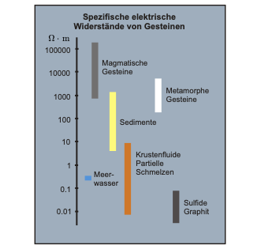
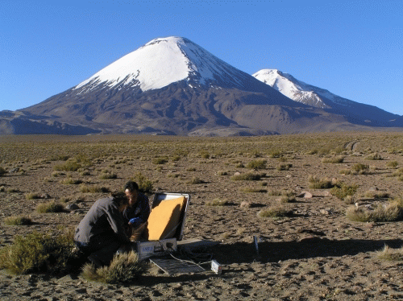
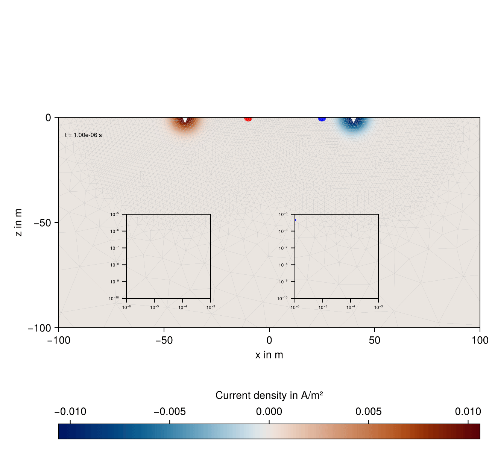
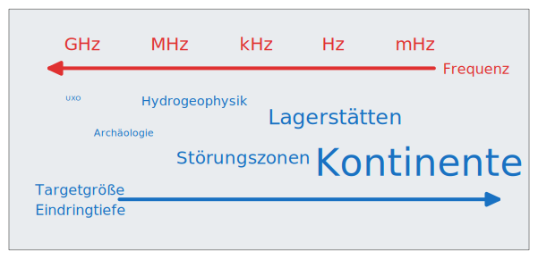

9 Einführung
Die elektromagnetischen Verfahren in der Geophysik (kurz: Geo-Elektromagnetik) dienen zur räumlichen Rekonstruktion der elektrischen Leitfähigkeit im Untergrund. Sie umfassen einen breiten Anwendungsbereich von der Archäometrie über Kampfmittelsuche, Hydrogeophysik, Lagerstättenerkundung bis hin zur Erforschung der elektrischen Eigenschaften von Erdkruste und Mantel.
Wir werden folgende wichtige Messverfahren kennenlernen:
- Magnetotellurik (MT)
- Controlled-Source Elektromagnetik (CSEM)
- Transient-Elektromagnetik (TEM)
9.1 Petrophysikalische Grundlagen
Die elektrische Leitfähigkeit ist der bedeutendste Stoffparameter der geoelektromagnetischen Verfahren. Innerhalb der Erdkruste variiert um 25 Dekaden (Diamant-Kupfer).
Wir unterscheiden drei Mechanismen der Leitfähigkeit:
- elektrolytische Leitfähigkeit
- elektronische Leitfähigkeit
- Grenzflächenleitfähigkeit

In der EM dominieren elektrolytische und elektronische Leitfähigkeit. Die elektrische Leitfähigkeit von Gesteinen tritt auf durch
- leitfähige Matrix: erfordert galvanisch oder induktiv gekoppelte leitfähige Minerale (Pyrit, Erze, Graphit)
- leitfähiges Fluid: erfordert galvanisch gekoppelte Porenräume (Archie)
Daneben besitzen die magnetische Suszeptibilität \(\kappa = 1 - \mu_{r}\) und die dielektrische Permittivität \(\varepsilon\) nur untergeordnete Bedeutung.

Die elektrische Leitfähigkeit bestimmt, welcher Stromfluss in einem leitfähigen Medium bei angelegtem elektrischen Feld realisiert werden kann.
Theoretischer Zusammenhang: Ohmsches Gesetz \[ \mathbf{j} = \sigma \mathbf{E} \]
Die elektrische Leitfähigkeit wird in S/m angegeben. Im Allgemeinen ist \(\sigma\) ein symmetrischer Tensor der Form \[ \pmb\sigma = \begin{pmatrix} \sigma_{xx} & \sigma_{xy} & \sigma_{xz} \\ \sigma_{yx} & \sigma_{yy} & \sigma_{yz} \\ \sigma_{zx} & \sigma_{zy} & \sigma_{zz} \end{pmatrix} \]
und bewirkt eine Anisotropie (Richtungsabhängigkeit) der Leitfähigkeit. Die Folge ist, dass die Richtung des Stromflusses in einem anisotropen Medium von der Richtung des angelegten elektrischen Feldes abweicht.
Bei isotroper Leitfähigkeit gilt \[ \sigma_{xx} = \sigma_{yy} = \sigma_{zz}, \]
und die Nebendiagonalelemente sind Null.
In der EM wird eine angepasste Vorstellung der Leitfähigkeitsmechanismen benötigt.
- Tonfreie Sedimente: Archie-Beziehung
- Festgestein: Klüftigkeitsmodelle
- Kruste, Mantel: Graphit, partielle Schmelzen
- Subduktionszonen: Fluideintrag
Die dielektrische Permittivität \(\varepsilon\) spielt nur bei sehr hohen Frequenzen oder niedrigen Leitfähigkeiten eine Rolle und dominiert die Prozesse z.B. beim Georadar (GPR).
9.2 Prinzip
Das grundlegende Prinzip der Geo-Elektromagnetik beruht auf der elektromagnetischen Induktion:
- Eine wechselstromdurchflossene Senderspule erzeugt magnetisches Wechselfeld
- Im leitenden Störkörper werden elektrische Wechselfelder (Wirbelströme) induziert
- Die Wirbelströme besitzen Magnetfeld, welches in der Empfängerspule gemessen wird

Diesem Grundprinzip folgen alle EM-Verfahren.
Unterschiede bestehen hinsichtlich
- der verwendeten Sender (induktiv oder galvanisch angekoppelt)
- der Stromfunktion im Sender (sinus- oder rechteckförmig)
- der gemessenen Feldgrößen (elektrische oder magnetische Felder, Zeitableitung der magnetischen Flussdichte)
- der Position der Quelle (marin, luftgestützt, bodengestützt)
- der Natur der Quelle (technisch oder natürlich)

9.3 Beispiele
9.3.1 Marine CSEM
Eine leistungsstarke Stromquelle wird als elektrischer Dipol über den Ozeanboden bewegt. Das Stromsystem bewirkt neben der Induktion im leitfähigen Sediment an den Grenzflächen der elektrischen Leitfähigkeit starke galvanische Effekte (ähnlich der Geoelektrik), inbesondere bei Anwesenheit von Schichten mit hohem spezifischen Widerstand. Diese Effekte werden durch gleichzeitige Messung von elektrischen und magnetischen Feldern erfasst.
Zusätzlich zu den technischen Stromsystemen können natürliche Quellenfelder der Magnetotellurik mit größerer Eindringtiefe genutzt werden.
Das Bild zeigt schematisch das CSEM-Messkonzept des Marine EM laboratory at Scripps Institution of Oceanography, San Diego, US.

Der Einsatz der marinen CSEM erfolgt überwiegend zur Kohlenwasserstoffexploration, während die marine MT der elektromagnetischen Tiefenforschung dient.
9.3.2 Airborne EM
Die Bundesanstalt für Geowissenschaften und Rohstoffe (BGR) setzt ein luftgestütztes Messsystem ein, das mit fünf Sendespulen arbeitet, die jeweils unterschiedliche Frequenzen nutzen. Das Bild zeigt die etwa 10 m lange Flugsonde, die an einem 45 m langen Kabel 30 bis 40 m über Gelände geflogen wird.

Die luftgestützten Methoden bieten zahlreiche Anwendungsmöglichkeiten:
- Bestimmung von Salz-/Süßwassergrenzen
- Grundwassersuche
- Geologische Kartierung
- Kartierung von Störungszonen
- Suche nach Altlasten
- Kartierung leitfähiger Sickerwässer
- Archäologische Vermessungen
- Ingenieurgeologische Messungen
- Lagerstättenexploration
Semi-airborne-Methoden benutzen einen ortsfesten Sender und luftgestützte Empfänger, die mittels Hubschrauber oder Drohnen über das Messgebiet geschleppt werden.
Das Bild zeigt ein 3D-Inversionsergebnis einer semi-airborne-Messung im Rahmen des DESMEX-Projektes.

9.3.3 Magnetotellurik
Die Magnetotellurik (MT) verwendet die Anregungsenergie natürlicher Stromsysteme in Ionosphäre und Magnetosphäre sowie der globalen Gewitteraktivität als Signalquelle. Als geophysikalisches Messverfahren wertet sie die zeitlichen Variationen der elektrischen und magnetischen Felder der Erde aus, um aus deren Verhältnis die elektrische Leitfähigkeit und die Struktur des Untergrunds abzuleiten.


9.3.4 Transient-Elektromagnetik
Die Transientelektromagnetik zeichnet Felder als Funktion der Zeit auf. Beobachtet werden Induktionsprozesse im leitfähigen Untergrund nach dem Abschalten eines Gleichstroms in der Sendespule.

Die Animation simuliert die Ausbreitung des induzierten Stromsystems nach dem Abschalten des Transmitterstromes bei \(t=0\). Zwei leitfähige zylindrische Einlagerungen erzeugen charakteristische Anomalien, die in den Transienten (s. insets) sichtbar sind.

9.4 Einteilung
Es existiert keine einheitliche Einteilung der verschiedenen EM-Methoden.
Möglich ist eine Unterscheidung
- hinsichtlich der eingesetzten Sender und Empfänger oder
- nach den Merkmalen der Felder.
| Sender | Elektroden | Elektroden und Spulen | Spulen (Erdoberfläche) | Spulen (Luft) |
|---|---|---|---|---|
| Geerdetes Kabel (galvanisch) | Widerstandsgeoelektrik, IP | MMR | ||
| Geerdetes Kabel (induktiv) | CSAMT | LOTEM | ||
| Spule | Slingram, TEM, Bohrloch-EM | Aero-EM | ||
| Langes Kabel, große Spule | TURAM, TEM, Bohrloch-EM | Semi-Airborne | ||
| Ebene Wellen: Vertikale Antenne | VLF-R | VLF | VLF | |
| Natürliche elektromagnetische Felder | Tellurik | MT |
Wir können die Verfahren auch hinsichtlich der Stromfunktion im Primärsignal unterteilen:
- zeitharmonisch: \(\mathbf{j}(\mathbf{r}) e^{ i \omega t }\)
- monofrequent
- Kontinuum (Frequenzgemisch)
- Zeitbereich: \(\mathbf{j}(\mathbf{r}, t)\)
- Impulsfolgen
- Rechteckimpulsfolgen
9.5 Frequenzen und Targets

9.6 Erkundungsmethoden
Wir unterscheiden drei unterschiedliche Methoden der Untersuchug des Untergrundes:
- Die Kartierung, bei welcher mit gleichbleibender Frequenz und Abstand zwischen Sender und Empfänger laterale Leitfähigkeitsinhomogenitäten durch Messungen entlang von Profilen erfasst werden
- Die Sondierung, bei welcher an einem festen Standort entweder die Frequenz oder der Abstand zwischen Sender und Empfänger verändert wird, um auf diese Weise die Eindringtiefe zu variieren. Die Information kommt dann aus unterschiedlichen Tiefenbereichen.
- Eine Kombination aus beiden Methoden liefert Messwerte, aus denen sich die Verteilung der elektrischen Leitfähigkeit im gesamten Raum rekonstruieren lässt.
9.7 Beispiele für EM-Messgeräte
- Bodenleitfähigkeitsmessgeräte, z.B. Geonics EM34, EM38 liefern scheinbare Leitfähigkeit
- TEM-Apparatur, z.B. Geonics TEM-47 liefert Transient \(\frac{ \partial B_{z}(t) }{ \partial t }\)
- MT-Apparatur, z.B. Metronix ADU-11e mit SHFT-02e-Sensoren oder MFS-Induktionsspulen, liefert Zeitreihen der Komponenten des elektrischen Feldes sowie der magnetischen Flussdichte
- Airborne-EM-System, z.B. Fugro, liefert Magnetfeldverhältnis \(B_{z}/B_{z}^{0}\) oder sekundäres Magnetfeld \(B_{z}^{s}=B_{z}-B_{z}^{0}\)